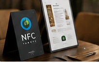
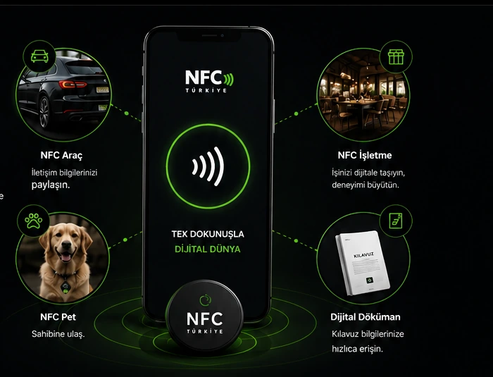
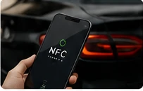
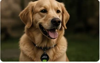
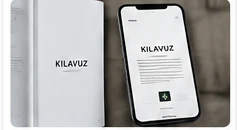

▦
NFC İşletme

İşletmenizi dijitale taşıyın, müşterilerinize modern ve pratik bir deneyim sunun.
- Google Puanlama ve Yorum
- Dijital Menü
- Vale Kart ile Araç Hazırlanması
- Garson Çağırma ve Hesap İsteme
- Hızlı Wi‑Fi Erişim
NFC teknolojisiyle ürünlerinizi, hizmetlerinizi ve iletişimlerinizi dijital dünyaya bağlayın. Akıllı, hızlı ve sürdürülebilir çözümler.
NFC Çözümlerimizi Keşfedin ↓
İhtiyacınıza uygun NFC çözümlerimizi keşfedin.

İşletmenizi dijitale taşıyın, müşterilerinize modern ve pratik bir deneyim sunun.

Park halinde aracınıza ulaşılması gereken durumlarda, NFC etiketi sayesinde araç sahibine hızlı ve kolay şekilde ulaşılmasını sağlar.

Evcil hayvanınız kaybolduğunda NFC etiketi sayesinde sahibine hızlıca ulaşılmasını sağlar.

Kılavuz bilgilerinize tek dokunuşla hızlıca erişin. Aradığınız bilgi her zaman cebinizde.
NFC Türkiye, fiziksel dünyayı dijital çözümlerle buluşturur.
İhtiyaca uygun, sade ve kontrollü kullanım senaryoları geliştiriyoruz.
Dijital erişimle gereksiz baskı ve kağıt tüketimini azaltmaya yardımcı oluyoruz.
NFC çözümleri hakkında bilgi almak için bize ulaşın.
info@nfcturkiye.com.tr